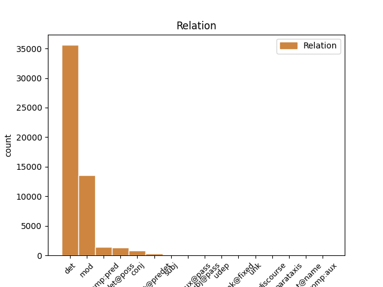
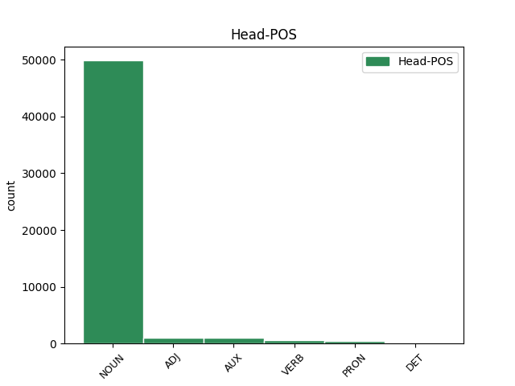
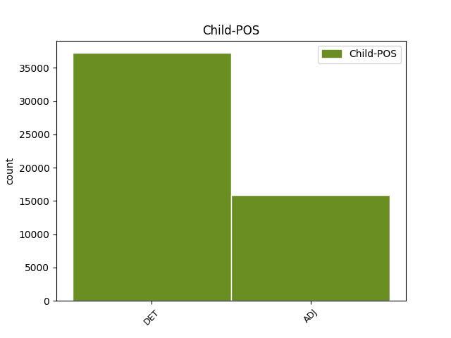

Distribution of features within this leaf



Agreement Rules sorted by frequency.
- When the dependent token is the determiner(det) of the head token, and the dependent token is DET.
1 Mohammad _ _ _ _ 0 _ _ _
2 Khatami _ _ _ _ 0 _ _ _
3 , _ _ _ _ 0 _ _ _
4 il _ _ _ _ 0 _ _ _
5 presidente _ _ _ _ 0 _ _ _
6 di _ _ _ _ 0 _ _ _
7 l’ _ _ _ _ 0 _ _ _
8 Iran _ _ _ _ 0 _ _ _
9 , _ _ _ _ 0 _ _ _
10 si _ _ _ _ 0 _ _ _
11 è _ _ _ _ 0 _ _ _
12 impegnato _ _ _ _ 0 _ _ _
13 a _ _ _ _ 0 _ _ _
14 ricostruire _ _ _ _ 0 _ _ _
15 il il DET RD Definite=Def|Gender=Masc|Number=Sing|PronType=Art 16 det _ _
16 centro centro NOUN S Gender=Masc|Number=Sing 0 _ _ _
17 di _ _ _ _ 0 _ _ _
18 la _ _ _ _ 0 _ _ _
19 città _ _ _ _ 0 _ _ _
20 di _ _ _ _ 0 _ _ _
21 Bam _ _ _ _ 0 _ _ _
22 entro _ _ _ _ 0 _ _ _
23 2 _ _ _ _ 0 _ _ _
24 anni _ _ _ _ 0 _ _ _
25 . _ _ _ _ 0 _ _ _
1 Gli _ _ _ _ 0 _ _ _
2 edifici _ _ _ _ 0 _ _ _
3 di _ _ _ _ 0 _ _ _
4 il _ _ _ _ 0 _ _ _
5 centro _ _ _ _ 0 _ _ _
6 storico _ _ _ _ 0 _ _ _
7 erano _ _ _ _ 0 _ _ _
8 costruiti _ _ _ _ 0 _ _ _
9 con _ _ _ _ 0 _ _ _
10 l’ _ _ _ _ 0 _ _ _
11 argilla _ _ _ _ 0 _ _ _
12 rossa _ _ _ _ 0 _ _ _
13 di _ _ _ _ 0 _ _ _
14 il _ _ _ _ 0 _ _ _
15 deserto _ _ _ _ 0 _ _ _
16 , _ _ _ _ 0 _ _ _
17 un _ _ _ _ 0 _ _ _
18 materiale materiale NOUN S Gender=Masc|Number=Sing 0 _ _ _
19 molto _ _ _ _ 0 _ _ _
20 fragile fragile ADJ A Number=Sing 18 mod _ SpaceAfter=No
21 . _ _ _ _ 0 _ _ _
1 Quando _ _ _ _ 0 _ _ _
2 il _ _ _ _ 0 _ _ _
3 terremoto _ _ _ _ 0 _ _ _
4 è essere AUX V Mood=Ind|Number=Sing|Person=3|Tense=Pres|VerbForm=Fin 0 _ _ _
5 forte forte ADJ A Number=Sing 4 comp:pred _ SpaceAfter=No
6 , _ _ _ _ 0 _ _ _
7 si _ _ _ _ 0 _ _ _
8 rovinano _ _ _ _ 0 _ _ _
9 o _ _ _ _ 0 _ _ _
10 crollano _ _ _ _ 0 _ _ _
11 anche _ _ _ _ 0 _ _ _
12 le _ _ _ _ 0 _ _ _
13 case _ _ _ _ 0 _ _ _
14 e _ _ _ _ 0 _ _ _
15 i _ _ _ _ 0 _ _ _
16 palazzi _ _ _ _ 0 _ _ _
17 . _ _ _ _ 0 _ _ _
1 Per _ _ _ _ 0 _ _ _
2 visitare _ _ _ _ 0 _ _ _
3 le _ _ _ _ 0 _ _ _
4 mostre _ _ _ _ 0 _ _ _
5 possiamo _ _ _ _ 0 _ _ _
6 acquistare _ _ _ _ 0 _ _ _
7 il _ _ _ _ 0 _ _ _
8 biglietto _ _ _ _ 0 _ _ _
9 il _ _ _ _ 0 _ _ _
10 giorno _ _ _ _ 0 _ _ _
11 stesso _ _ _ _ 0 _ _ _
12 di _ _ _ _ 0 _ _ _
13 la _ _ _ _ 0 _ _ _
14 nostra nostro DET AP Gender=Fem|Number=Sing|Poss=Yes|PronType=Prs 15 det@poss _ _
15 visita visita NOUN S Gender=Fem|Number=Sing 0 _ _ _
16 in _ _ _ _ 0 _ _ _
17 le _ _ _ _ 0 _ _ _
18 sedi _ _ _ _ 0 _ _ _
19 di _ _ _ _ 0 _ _ _
20 le _ _ _ _ 0 _ _ _
21 varie _ _ _ _ 0 _ _ _
22 mostre _ _ _ _ 0 _ _ _
23 . _ _ _ _ 0 _ _ _
1 La _ _ _ _ 0 _ _ _
2 Costituzione _ _ _ _ 0 _ _ _
3 italiana _ _ _ _ 0 _ _ _
4 prevede _ _ _ _ 0 _ _ _
5 4 _ _ _ _ 0 _ _ _
6 tipi _ _ _ _ 0 _ _ _
7 di _ _ _ _ 0 _ _ _
8 referendum _ _ _ _ 0 _ _ _
9 : _ _ _ _ 0 _ _ _
10 abrogativo _ _ _ _ 0 _ _ _
11 , _ _ _ _ 0 _ _ _
12 territoriale _ _ _ _ 0 _ _ _
13 , _ _ _ _ 0 _ _ _
14 consultivo consultivo ADJ A Gender=Masc|Number=Sing 0 _ _ _
15 e _ _ _ _ 0 _ _ _
16 costituzionale costituzionale ADJ A Number=Sing 14 conj _ SpaceAfter=No
17 . _ _ _ _ 0 _ _ _
1 Il _ _ _ _ 0 _ _ _
2 centro _ _ _ _ 0 _ _ _
3 storico _ _ _ _ 0 _ _ _
4 era _ _ _ _ 0 _ _ _
5 la _ _ _ _ 0 _ _ _
6 parte _ _ _ _ 0 _ _ _
7 più _ _ _ _ 0 _ _ _
8 antica _ _ _ _ 0 _ _ _
9 di _ _ _ _ 0 _ _ _
10 Bam _ _ _ _ 0 _ _ _
11 che _ _ _ _ 0 _ _ _
12 era _ _ _ _ 0 _ _ _
13 patrimonio _ _ _ _ 0 _ _ _
14 artistico _ _ _ _ 0 _ _ _
15 di _ _ _ _ 0 _ _ _
16 tutta tutto DET T Gender=Fem|Number=Sing|PronType=Tot 18 det@predet _ _
17 l’ _ _ _ _ 0 _ _ _
18 umanità umanità NOUN S Gender=Fem|Number=Sing 0 _ _ _
19 . _ _ _ _ 0 _ _ _
1 Cultural cultural ADJ A Number=Sing 2 subj _ _
2 è essere AUX V Mood=Ind|Number=Sing|Person=3|Tense=Pres|VerbForm=Fin 0 _ _ _
3 un _ _ _ _ 0 _ _ _
4 aggettivo _ _ _ _ 0 _ _ _
5 inglese _ _ _ _ 0 _ _ _
6 che _ _ _ _ 0 _ _ _
7 significa _ _ _ _ 0 _ _ _
8 “ _ _ _ _ 0 _ _ _
9 culturale _ _ _ _ 0 _ _ _
10 ” _ _ _ _ 0 _ _ _
11 . _ _ _ _ 0 _ _ _
1 I _ _ _ _ 0 _ _ _
2 risultati _ _ _ _ 0 _ _ _
3 ottenuti _ _ _ _ 0 _ _ _
4 da _ _ _ _ 0 _ _ _
5 le _ _ _ _ 0 _ _ _
6 campagne _ _ _ _ 0 _ _ _
7 pubblicitarie _ _ _ _ 0 _ _ _
8 di _ _ _ _ 0 _ _ _
9 Storquest _ _ _ _ 0 _ _ _
10 su _ _ _ _ 0 _ _ _
11 Facebook _ _ _ _ 0 _ _ _
12 sono essere AUX VA Mood=Ind|Number=Plur|Person=3|Tense=Pres|VerbForm=Fin 0 _ _ _
13 stati _ _ _ _ 0 _ _ _
14 tra _ _ _ _ 0 _ _ _
15 i _ _ _ _ 0 _ _ _
16 migliori migliore ADJ A Degree=Cmp|Number=Plur 12 comp:aux@pass _ _
17 mai _ _ _ _ 0 _ _ _
18 ottenuti _ _ _ _ 0 _ _ _
19 da _ _ _ _ 0 _ _ _
20 tutte _ _ _ _ 0 _ _ _
21 le _ _ _ _ 0 _ _ _
22 pubblicità _ _ _ _ 0 _ _ _
23 pubblicate _ _ _ _ 0 _ _ _
24 da _ _ _ _ 0 _ _ _
25 l' _ _ _ _ 0 _ _ _
26 azienda _ _ _ _ 0 _ _ _
27 . _ _ _ _ 0 _ _ _
1 Shakespeare _ _ _ _ 0 _ _ _
2 ha _ _ _ _ 0 _ _ _
3 anche _ _ _ _ 0 _ _ _
4 ispirato _ _ _ _ 0 _ _ _
5 molti _ _ _ _ 0 _ _ _
6 pittori _ _ _ _ 0 _ _ _
7 , _ _ _ _ 0 _ _ _
8 inclusi includere VERB V Gender=Masc|Number=Plur|Tense=Past|VerbForm=Part 0 _ _ _
9 i _ _ _ _ 0 _ _ _
10 romantici romantico ADJ A Gender=Masc|Number=Plur 8 subj@pass _ _
11 e _ _ _ _ 0 _ _ _
12 i _ _ _ _ 0 _ _ _
13 Preraffaelliti _ _ _ _ 0 _ _ _
14 . _ _ _ _ 0 _ _ _
1 In _ _ _ _ 0 _ _ _
2 caso _ _ _ _ 0 _ _ _
3 di _ _ _ _ 0 _ _ _
4 impedimento _ _ _ _ 0 _ _ _
5 permanente _ _ _ _ 0 _ _ _
6 o _ _ _ _ 0 _ _ _
7 di _ _ _ _ 0 _ _ _
8 morte _ _ _ _ 0 _ _ _
9 o _ _ _ _ 0 _ _ _
10 di _ _ _ _ 0 _ _ _
11 dimissioni _ _ _ _ 0 _ _ _
12 di _ _ _ _ 0 _ _ _
13 il _ _ _ _ 0 _ _ _
14 Presidente _ _ _ _ 0 _ _ _
15 di _ _ _ _ 0 _ _ _
16 la _ _ _ _ 0 _ _ _
17 Repubblica _ _ _ _ 0 _ _ _
18 , _ _ _ _ 0 _ _ _
19 il _ _ _ _ 0 _ _ _
20 Presidente _ _ _ _ 0 _ _ _
21 di _ _ _ _ 0 _ _ _
22 la _ _ _ _ 0 _ _ _
23 Camera _ _ _ _ 0 _ _ _
24 di _ _ _ _ 0 _ _ _
25 i _ _ _ _ 0 _ _ _
26 deputati _ _ _ _ 0 _ _ _
27 indice indire VERB V Mood=Ind|Number=Sing|Person=3|Tense=Pres|VerbForm=Fin 0 _ _ _
28 la _ _ _ _ 0 _ _ _
29 elezione _ _ _ _ 0 _ _ _
30 di _ _ _ _ 0 _ _ _
31 il _ _ _ _ 0 _ _ _
32 nuovo _ _ _ _ 0 _ _ _
33 Presidente _ _ _ _ 0 _ _ _
34 di _ _ _ _ 0 _ _ _
35 la _ _ _ _ 0 _ _ _
36 Repubblica _ _ _ _ 0 _ _ _
37 entro _ _ _ _ 0 _ _ _
38 quindici _ _ _ _ 0 _ _ _
39 giorni _ _ _ _ 0 _ _ _
40 , _ _ _ _ 0 _ _ _
41 salvo salvo ADJ A Number=Sing 27 udep _ _
42 il _ _ _ _ 0 _ _ _
43 maggior _ _ _ _ 0 _ _ _
44 termine _ _ _ _ 0 _ _ _
45 previsto _ _ _ _ 0 _ _ _
46 se _ _ _ _ 0 _ _ _
47 le _ _ _ _ 0 _ _ _
48 Camere _ _ _ _ 0 _ _ _
49 sono _ _ _ _ 0 _ _ _
50 sciolte _ _ _ _ 0 _ _ _
51 o _ _ _ _ 0 _ _ _
52 manca _ _ _ _ 0 _ _ _
53 meno _ _ _ _ 0 _ _ _
54 di _ _ _ _ 0 _ _ _
55 tre _ _ _ _ 0 _ _ _
56 mesi _ _ _ _ 0 _ _ _
57 a _ _ _ _ 0 _ _ _
58 la _ _ _ _ 0 _ _ _
59 loro _ _ _ _ 0 _ _ _
60 cessazione _ _ _ _ 0 _ _ _
61 . _ _ _ _ 0 _ _ _
1 Quante _ _ _ _ 0 _ _ _
2 Olimpiadi _ _ _ _ 0 _ _ _
3 vennero _ _ _ _ 0 _ _ _
4 cancellate _ _ _ _ 0 _ _ _
5 a _ _ _ _ 0 _ _ _
6 causa _ _ _ _ 0 _ _ _
7 di _ _ _ _ 0 _ _ _
8 la _ _ _ _ 0 _ _ _
9 I _ _ _ _ 0 _ _ _
10 Guerra guerra NOUN S Gender=Fem|Number=Sing 0 _ _ _
11 Mondiale mondiale ADJ A Number=Sing 10 unk@fixed _ SpaceAfter=No
12 ? _ _ _ _ 0 _ _ _
1 E _ _ _ _ 0 _ _ _
2 noi _ _ _ _ 0 _ _ _
3 stiamo _ _ _ _ 0 _ _ _
4 rendendo _ _ _ _ 0 _ _ _
5 l' _ _ _ _ 0 _ _ _
6 oceano _ _ _ _ 0 _ _ _
7 piuttosto _ _ _ _ 0 _ _ _
8 infelice _ _ _ _ 0 _ _ _
9 in _ _ _ _ 0 _ _ _
10 molti molto DET DI Gender=Masc|Number=Plur|PronType=Ind 0 _ _ _
11 e _ _ _ _ 0 _ _ _
12 svariati svariato DET DI Gender=Masc|Number=Plur|PronType=Ind 10 conj _ _
13 modi _ _ _ _ 0 _ _ _
14 . _ _ _ _ 0 _ _ _
1 Come _ _ _ _ 0 _ _ _
2 i il DET RD Definite=Def|Gender=Masc|Number=Plur|PronType=Art 4 unk _ _
3 due _ _ _ _ 0 _ _ _
4 gentiluomini gentiluomo NOUN S Gender=Masc|Number=Plur 0 _ _ _
5 di _ _ _ _ 0 _ _ _
6 Verona _ _ _ _ 0 _ _ _
7 , _ _ _ _ 0 _ _ _
8 in _ _ _ _ 0 _ _ _
9 cui _ _ _ _ 0 _ _ _
10 due _ _ _ _ 0 _ _ _
11 amici _ _ _ _ 0 _ _ _
12 sembrano _ _ _ _ 0 _ _ _
13 approvare _ _ _ _ 0 _ _ _
14 un _ _ _ _ 0 _ _ _
15 rapimento _ _ _ _ 0 _ _ _
16 , _ _ _ _ 0 _ _ _
17 la _ _ _ _ 0 _ _ _
18 storia _ _ _ _ 0 _ _ _
19 di _ _ _ _ 0 _ _ _
20 la _ _ _ _ 0 _ _ _
21 Bisbetica _ _ _ _ 0 _ _ _
22 e _ _ _ _ 0 _ _ _
23 di _ _ _ _ 0 _ _ _
24 il _ _ _ _ 0 _ _ _
25 tentativo _ _ _ _ 0 _ _ _
26 di _ _ _ _ 0 _ _ _
27 un _ _ _ _ 0 _ _ _
28 uomo _ _ _ _ 0 _ _ _
29 di _ _ _ _ 0 _ _ _
30 domare _ _ _ _ 0 _ _ _
31 lo _ _ _ _ 0 _ _ _
32 spirito _ _ _ _ 0 _ _ _
33 indipendente _ _ _ _ 0 _ _ _
34 di _ _ _ _ 0 _ _ _
35 una _ _ _ _ 0 _ _ _
36 donna _ _ _ _ 0 _ _ _
37 a _ _ _ _ 0 _ _ _
38 volte _ _ _ _ 0 _ _ _
39 mette _ _ _ _ 0 _ _ _
40 in _ _ _ _ 0 _ _ _
41 difficoltà _ _ _ _ 0 _ _ _
42 i _ _ _ _ 0 _ _ _
43 registi _ _ _ _ 0 _ _ _
44 e _ _ _ _ 0 _ _ _
45 i _ _ _ _ 0 _ _ _
46 critici _ _ _ _ 0 _ _ _
47 moderni _ _ _ _ 0 _ _ _
48 . _ _ _ _ 0 _ _ _
1 Ci _ _ _ _ 0 _ _ _
2 sono _ _ _ _ 0 _ _ _
3 , _ _ _ _ 0 _ _ _
4 è essere VERB V Mood=Ind|Number=Sing|Person=3|Tense=Pres|VerbForm=Fin 0 _ _ _
5 vero vero ADJ A Gender=Masc|Number=Sing 4 parataxis _ SpaceAfter=No
6 , _ _ _ _ 0 _ _ _
7 ( _ _ _ _ 0 _ _ _
8 continua _ _ _ _ 0 _ _ _
9 la _ _ _ _ 0 _ _ _
10 Corte _ _ _ _ 0 _ _ _
11 ) _ _ _ _ 0 _ _ _
12 , _ _ _ _ 0 _ _ _
13 i _ _ _ _ 0 _ _ _
14 fatti _ _ _ _ 0 _ _ _
15 a _ _ _ _ 0 _ _ _
16 tutti _ _ _ _ 0 _ _ _
17 noti _ _ _ _ 0 _ _ _
18 , _ _ _ _ 0 _ _ _
19 ci _ _ _ _ 0 _ _ _
20 sono _ _ _ _ 0 _ _ _
21 le _ _ _ _ 0 _ _ _
22 massime _ _ _ _ 0 _ _ _
23 di _ _ _ _ 0 _ _ _
24 comune _ _ _ _ 0 _ _ _
25 esperienza _ _ _ _ 0 _ _ _
26 universalmente _ _ _ _ 0 _ _ _
27 accettate _ _ _ _ 0 _ _ _
28 . _ _ _ _ 0 _ _ _
1 Gli _ _ _ _ 0 _ _ _
2 studiosi _ _ _ _ 0 _ _ _
3 hanno _ _ _ _ 0 _ _ _
4 opinioni _ _ _ _ 0 _ _ _
5 differenti _ _ _ _ 0 _ _ _
6 su _ _ _ _ 0 _ _ _
7 l' _ _ _ _ 0 _ _ _
8 esatto _ _ _ _ 0 _ _ _
9 significato _ _ _ _ 0 _ _ _
10 di _ _ _ _ 0 _ _ _
11 queste _ _ _ _ 0 _ _ _
12 parole _ _ _ _ 0 _ _ _
13 , _ _ _ _ 0 _ _ _
14 ma _ _ _ _ 0 _ _ _
15 molti _ _ _ _ 0 _ _ _
16 sono essere AUX VA Mood=Ind|Number=Plur|Person=3|Tense=Pres|VerbForm=Fin 0 _ _ _
17 concordi concorde ADJ A Number=Plur 16 comp:aux _ _
18 che _ _ _ _ 0 _ _ _
19 Greene _ _ _ _ 0 _ _ _
20 stia _ _ _ _ 0 _ _ _
21 accusando _ _ _ _ 0 _ _ _
22 Shakespeare _ _ _ _ 0 _ _ _
23 di _ _ _ _ 0 _ _ _
24 puntare _ _ _ _ 0 _ _ _
25 troppo _ _ _ _ 0 _ _ _
26 in _ _ _ _ 0 _ _ _
27 alto _ _ _ _ 0 _ _ _
28 in _ _ _ _ 0 _ _ _
29 il _ _ _ _ 0 _ _ _
30 cercare _ _ _ _ 0 _ _ _
31 di _ _ _ _ 0 _ _ _
32 paragonar _ _ _ _ 0 _ _ _
33 si _ _ _ _ 0 _ _ _
34 a _ _ _ _ 0 _ _ _
35 scrittori _ _ _ _ 0 _ _ _
36 con _ _ _ _ 0 _ _ _
37 un' _ _ _ _ 0 _ _ _
38 educazione _ _ _ _ 0 _ _ _
39 universitaria _ _ _ _ 0 _ _ _
40 come _ _ _ _ 0 _ _ _
41 Christopher _ _ _ _ 0 _ _ _
42 Marlowe _ _ _ _ 0 _ _ _
43 , _ _ _ _ 0 _ _ _
44 Thomas _ _ _ _ 0 _ _ _
45 Nashe _ _ _ _ 0 _ _ _
46 e _ _ _ _ 0 _ _ _
47 Greene _ _ _ _ 0 _ _ _
48 stesso _ _ _ _ 0 _ _ _
49 ( _ _ _ _ 0 _ _ _
50 " _ _ _ _ 0 _ _ _
51 le _ _ _ _ 0 _ _ _
52 intelligenze _ _ _ _ 0 _ _ _
53 universitarie _ _ _ _ 0 _ _ _
54 " _ _ _ _ 0 _ _ _
55 ) _ _ _ _ 0 _ _ _
56 . _ _ _ _ 0 _ _ _
1 Dopotutto _ _ _ _ 0 _ _ _
2 , _ _ _ _ 0 _ _ _
3 il _ _ _ _ 0 _ _ _
4 volume _ _ _ _ 0 _ _ _
5 di _ _ _ _ 0 _ _ _
6 la _ _ _ _ 0 _ _ _
7 produzione _ _ _ _ 0 _ _ _
8 non _ _ _ _ 0 _ _ _
9 avrebbe avere AUX VA Mood=Cnd|Number=Sing|Person=3|Tense=Pres|VerbForm=Fin 0 _ _ _
10 potuto _ _ _ _ 0 _ _ _
11 aumentare _ _ _ _ 0 _ _ _
12 a _ _ _ _ 0 _ _ _
13 il _ _ _ _ 0 _ _ _
14 punto _ _ _ _ 0 _ _ _
15 tale _ _ _ _ 0 _ _ _
16 da _ _ _ _ 0 _ _ _
17 reimpiegare _ _ _ _ 0 _ _ _
18 tutti _ _ _ _ 0 _ _ _
19 coloro _ _ _ _ 0 _ _ _
20 che _ _ _ _ 0 _ _ _
21 avevano _ _ _ _ 0 _ _ _
22 perso _ _ _ _ 0 _ _ _
23 il _ _ _ _ 0 _ _ _
24 lavoro _ _ _ _ 0 _ _ _
25 come _ _ _ _ 0 _ _ _
26 tessitori _ _ _ _ 0 _ _ _
27 , _ _ _ _ 0 _ _ _
28 addetti _ _ _ _ 0 _ _ _
29 a _ _ _ _ 0 _ _ _
30 i _ _ _ _ 0 _ _ _
31 macchinari _ _ _ _ 0 _ _ _
32 o _ _ _ _ 0 _ _ _
33 venditori _ _ _ _ 0 _ _ _
34 di _ _ _ _ 0 _ _ _
35 tappeti _ _ _ _ 0 _ _ _
36 , _ _ _ _ 0 _ _ _
37 giusto giusto ADJ A Gender=Masc|Number=Sing 9 discourse _ SpaceAfter=No
38 ? _ _ _ _ 0 _ _ _
1 L’ _ _ _ _ 0 _ _ _
2 Onu _ _ _ _ 0 _ _ _
3 , _ _ _ _ 0 _ _ _
4 Organizzazione _ _ _ _ 0 _ _ _
5 di _ _ _ _ 0 _ _ _
6 le _ _ _ _ 0 _ _ _
7 Nazioni nazione NOUN S Gender=Fem|Number=Plur 0 _ _ _
8 Unite unito ADJ A Gender=Fem|Number=Plur 7 flat@name _ SpaceAfter=No
9 , _ _ _ _ 0 _ _ _
10 ha _ _ _ _ 0 _ _ _
11 deciso _ _ _ _ 0 _ _ _
12 che _ _ _ _ 0 _ _ _
13 il _ _ _ _ 0 _ _ _
14 2004 _ _ _ _ 0 _ _ _
15 è _ _ _ _ 0 _ _ _
16 l’ _ _ _ _ 0 _ _ _
17 anno _ _ _ _ 0 _ _ _
18 internazionale _ _ _ _ 0 _ _ _
19 di _ _ _ _ 0 _ _ _
20 il _ _ _ _ 0 _ _ _
21 riso _ _ _ _ 0 _ _ _
Disagree Examples:
1 Una _ _ _ _ 0 _ _ _
2 prima _ _ _ _ 0 _ _ _
3 segnalazione _ _ _ _ 0 _ _ _
4 è _ _ _ _ 0 _ _ _
5 stata _ _ _ _ 0 _ _ _
6 inviata _ _ _ _ 0 _ _ _
7 a _ _ _ _ 0 _ _ _
8 la _ _ _ _ 0 _ _ _
9 Procura _ _ _ _ 0 _ _ _
10 di _ _ _ _ 0 _ _ _
11 la _ _ _ _ 0 _ _ _
12 Repubblica _ _ _ _ 0 _ _ _
13 , _ _ _ _ 0 _ _ _
14 poi _ _ _ _ 0 _ _ _
15 il _ _ _ _ 0 _ _ _
16 caso _ _ _ _ 0 _ _ _
17 è _ _ _ _ 0 _ _ _
18 passato _ _ _ _ 0 _ _ _
19 in _ _ _ _ 0 _ _ _
20 le _ _ _ _ 0 _ _ _
21 mani _ _ _ _ 0 _ _ _
22 di _ _ _ _ 0 _ _ _
23 il il DET RD Definite=Def|Gender=Masc|Number=Sing|PronType=Art 24 det _ _
24 giudici giudice NOUN S Gender=Masc|Number=Plur 0 _ _ _
25 di _ _ _ _ 0 _ _ _
26 viale _ _ _ _ 0 _ _ _
27 di _ _ _ _ 0 _ _ _
28 le _ _ _ _ 0 _ _ _
29 Milizie _ _ _ _ 0 _ _ _
30 . _ _ _ _ 0 _ _ _
1 E _ _ _ _ 0 _ _ _
2 in _ _ _ _ 0 _ _ _
3 il il DET RD Definite=Def|Gender=Masc|Number=Plur|PronType=Art 4 det _ _
4 frattempo frattempo NOUN S Gender=Masc|Number=Sing 0 _ _ _
5 politici _ _ _ _ 0 _ _ _
6 , _ _ _ _ 0 _ _ _
7 ambasciatori _ _ _ _ 0 _ _ _
8 e _ _ _ _ 0 _ _ _
9 industriali _ _ _ _ 0 _ _ _
10 discutevano _ _ _ _ 0 _ _ _
11 di _ _ _ _ 0 _ _ _
12 petrolio _ _ _ _ 0 _ _ _
13 . _ _ _ _ 0 _ _ _
1 sembra _ _ _ _ 0 _ _ _
2 che _ _ _ _ 0 _ _ _
3 una _ _ _ _ 0 _ _ _
4 di _ _ _ _ 0 _ _ _
5 le il DET RD Definite=Def|Gender=Fem|Number=Plur|PronType=Art 6 det _ _
6 telefonata telefonata NOUN S Gender=Fem|Number=Sing 0 _ _ _
7 sia _ _ _ _ 0 _ _ _
8 stata _ _ _ _ 0 _ _ _
9 fatta _ _ _ _ 0 _ _ _
10 da _ _ _ _ 0 _ _ _
11 il _ _ _ _ 0 _ _ _
12 corazziere _ _ _ _ 0 _ _ _
13 mentre _ _ _ _ 0 _ _ _
14 era _ _ _ _ 0 _ _ _
15 in _ _ _ _ 0 _ _ _
16 servizio _ _ _ _ 0 _ _ _
17 a _ _ _ _ 0 _ _ _
18 il _ _ _ _ 0 _ _ _
19 Quirinale _ _ _ _ 0 _ _ _
20 . _ _ _ _ 0 _ _ _
1 È _ _ _ _ 0 _ _ _
2 improbabile _ _ _ _ 0 _ _ _
3 che _ _ _ _ 0 _ _ _
4 gli _ _ _ _ 0 _ _ _
5 abitanti _ _ _ _ 0 _ _ _
6 di _ _ _ _ 0 _ _ _
7 Knin _ _ _ _ 0 _ _ _
8 , _ _ _ _ 0 _ _ _
9 su _ _ _ _ 0 _ _ _
10 i _ _ _ _ 0 _ _ _
11 quali _ _ _ _ 0 _ _ _
12 prima _ _ _ _ 0 _ _ _
13 di _ _ _ _ 0 _ _ _
14 la _ _ _ _ 0 _ _ _
15 resa _ _ _ _ 0 _ _ _
16 pioveva _ _ _ _ 0 _ _ _
17 un _ _ _ _ 0 _ _ _
18 proiettile _ _ _ _ 0 _ _ _
19 d' _ _ _ _ 0 _ _ _
20 artiglieria _ _ _ _ 0 _ _ _
21 ogni ogni DET DI Number=Sing|PronType=Ind 23 det _ _
22 dieci _ _ _ _ 0 _ _ _
23 secondi secondo NOUN S Gender=Masc|Number=Plur 0 _ _ _
24 , _ _ _ _ 0 _ _ _
25 abbiano _ _ _ _ 0 _ _ _
26 ricordato _ _ _ _ 0 _ _ _
27 l' _ _ _ _ 0 _ _ _
28 anniversario _ _ _ _ 0 _ _ _
29 di _ _ _ _ 0 _ _ _
30 l' _ _ _ _ 0 _ _ _
31 atomica _ _ _ _ 0 _ _ _
32 di _ _ _ _ 0 _ _ _
33 Hiroshima _ _ _ _ 0 _ _ _
34 . _ _ _ _ 0 _ _ _
1 I il DET RD Definite=Def|Gender=Masc|Number=Plur|PronType=Art 2 det _ _
2 sequestro sequestro NOUN S Gender=Masc|Number=Sing 0 _ _ _
3 era _ _ _ _ 0 _ _ _
4 avvenuto _ _ _ _ 0 _ _ _
5 lo _ _ _ _ 0 _ _ _
6 scorso _ _ _ _ 0 _ _ _
7 sabato _ _ _ _ 0 _ _ _
8 . _ _ _ _ 0 _ _ _